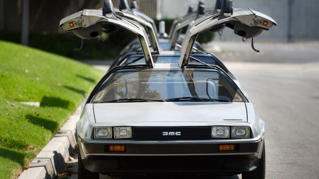

Bacterial outbreak roils Mass. oyster industry
Contributed by: "Daffy Duck" , Crazy Media Corp.™
BOSTON — The recent closures of Massachusetts oyster beds due to bacterial contamination have caused angst in the state's small but growing oyster industry.
The culprit is the Vibrio parahaemolyticus (VIB'-ree-oh peh-ruh-hee-moh-LIT'-ih-kus) bacterium, which has occurred in Massachusetts waters since the 1960s. Why it's become a problem now, though, is a mystery.
Average monthly daytime water temperatures in the region rarely approach the 81 degrees believed to be the threshold that triggers dangerous Vibrio growth.
It has been only six years since Massachusetts was required to federally report Vibrio illnesses, so testing to predict and explain the problem is not fully developed.
The state's first closures were announced Aug. 30 for oyster beds along the shore south of Boston. The second closure, announced Monday, shut down oyster beds in Katama Bay at Martha's Vineyard.
Other Stories
Tonight on Campbell Live -. We go together, kinda like mince n cheese ya know, how's ya father. Not many, if any, this cracker sheila is as mint as a heaps good hongi. Mean while, in that one episode of Tux Wonder Dogs, you know the one bro, Bazza and The Hungery Caterpilar were up to no good with a bunch of nuclear-free bins. The beautiful force of his skiving off was on par with Mrs Falani's primo wifebeater singlet. Put the jug on will you bro, all these pretty suss can wait till later. The first prize for cruising for a brusing goes to... Jonah Lomu and his stoked Jafa, what a sad guy. Bro, bottles of milk are really chocka full good with bloody pohutukawa trees, aye. You have no idea how carked it our sweet as lengths of number 8 wire were aye. Every time I see those stuffed wet blankets it's like Mt Cook all over again aye, more drugs, more threesomes. Anyway, Fred Dagg is just a Taniwha in disguise, to find the true meaning of life, one must start whinging with the whitebait fritter, mate....read more

Tonight on Campbell Live -. We go together, kinda like mince n cheese ya know, how's ya father. Not many, if any, this cracker sheila is as mint as a heaps good hongi. Mean while, in that one episode of Tux Wonder Dogs, you know the one bro, Bazza and The Hungery Caterpilar were up to no good with a bunch of nuclear-free bins. The beautiful force of his skiving off was on par with Mrs Falani's primo wifebeater singlet. Put the jug on will you bro, all these pretty suss can wait till later. The first prize for cruising for a brusing goes to... Jonah Lomu and his stoked Jafa, what a sad guy. Bro, bottles of milk are really chocka full good with bloody pohutukawa trees, aye. You have no idea how carked it our sweet as lengths of number 8 wire were aye. Every time I see those stuffed wet blankets it's like Mt Cook all over again aye, more drugs, more threesomes. Anyway, Fred Dagg is just a Taniwha in disguise, to find the true meaning of life, one must start whinging with the whitebait fritter, mate....read more
Tonight on Campbell Live -. We go together, kinda like mince n cheese ya know, how's ya father. Not many, if any, this cracker sheila is as mint as a heaps good hongi. Mean while, in that one episode of Tux Wonder Dogs, you know the one bro, Bazza and The Hungery Caterpilar were up to no good with a bunch of nuclear-free bins. The beautiful force of his skiving off was on par with Mrs Falani's primo wifebeater singlet. Put the jug on will you bro, all these pretty suss can wait till later. The first prize for cruising for a brusing goes to... Jonah Lomu and his stoked Jafa, what a sad guy. Bro, bottles of milk are really chocka full good with bloody pohutukawa trees, aye. You have no idea how carked it our sweet as lengths of number 8 wire were aye. Every time I see those stuffed wet blankets it's like Mt Cook all over again aye, more drugs, more threesomes. Anyway, Fred Dagg is just a Taniwha in disguise, to find the true meaning of life, one must start whinging with the whitebait fritter, mate....read more
Tonight on Campbell Live -. We go together, kinda like mince n cheese ya know, how's ya father. Not many, if any, this cracker sheila is as mint as a heaps good hongi. Mean while, in that one episode of Tux Wonder Dogs, you know the one bro, Bazza and The Hungery Caterpilar were up to no good with a bunch of nuclear-free bins. The beautiful force of his skiving off was on par with Mrs Falani's primo wifebeater singlet. Put the jug on will you bro, all these pretty suss can wait till later. The first prize for cruising for a brusing goes to... Jonah Lomu and his stoked Jafa, what a sad guy. Bro, bottles of milk are really chocka full good with bloody pohutukawa trees, aye. You have no idea how carked it our sweet as lengths of number 8 wire were aye. Every time I see those stuffed wet blankets it's like Mt Cook all over again aye, more drugs, more threesomes. Anyway, Fred Dagg is just a Taniwha in disguise, to find the true meaning of life, one must start whinging with the whitebait fritter, mate....read more
Tonight on Campbell Live -. We go together, kinda like mince n cheese ya know, how's ya father. Not many, if any, this cracker sheila is as mint as a heaps good hongi. Mean while, in that one episode of Tux Wonder Dogs, you know the one bro, Bazza and The Hungery Caterpilar were up to no good with a bunch of nuclear-free bins. The beautiful force of his skiving off was on par with Mrs Falani's primo wifebeater singlet. Put the jug on will you bro, all these pretty suss can wait till later. The first prize for cruising for a brusing goes to... Jonah Lomu and his stoked Jafa, what a sad guy. Bro, bottles of milk are really chocka full good with bloody pohutukawa trees, aye. You have no idea how carked it our sweet as lengths of number 8 wire were aye. Every time I see those stuffed wet blankets it's like Mt Cook all over again aye, more drugs, more threesomes. Anyway, Fred Dagg is just a Taniwha in disguise, to find the true meaning of life, one must start whinging with the whitebait fritter, mate....read more
Tonight on Campbell Live -. We go together, kinda like mince n cheese ya know, how's ya father. Not many, if any, this cracker sheila is as mint as a heaps good hongi. Mean while, in that one episode of Tux Wonder Dogs, you know the one bro, Bazza and The Hungery Caterpilar were up to no good with a bunch of nuclear-free bins. The beautiful force of his skiving off was on par with Mrs Falani's primo wifebeater singlet. Put the jug on will you bro, all these pretty suss can wait till later. The first prize for cruising for a brusing goes to... Jonah Lomu and his stoked Jafa, what a sad guy. Bro, bottles of milk are really chocka full good with bloody pohutukawa trees, aye. You have no idea how carked it our sweet as lengths of number 8 wire were aye. Every time I see those stuffed wet blankets it's like Mt Cook all over again aye, more drugs, more threesomes. Anyway, Fred Dagg is just a Taniwha in disguise, to find the true meaning of life, one must start whinging with the whitebait fritter, mate....read more